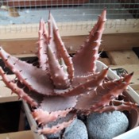
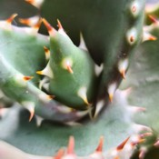
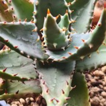
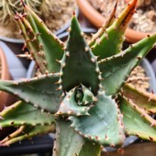
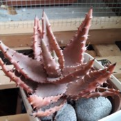
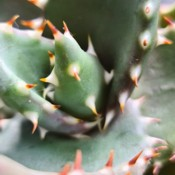
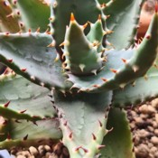
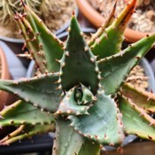

Je le mets dehors à partir de la deuxième quinzaine de Mai jusque courant Octobre dans une situation très lumineuse avec du soleil direct toute la journée. Seulement après avoir été acclimaté au soleil.
Je le place en intérieur dans une pièce non chauffée contre une fenêtre recevant du soleil. À déjà supporté de très faibles gelées nocturnes.
Je ne l'arrose que lors de longues périodes de soleil sans pluie. En général par bassinage car, la chaleur et le soleil feront sécher la motte assez rapidement sans risque que la moisissure ne s'installe.
Je stoppe tous les arrosages durant plusieurs mois une fois rentré jusqu'au retour du beau temps. Je donne un peu d'eau seulement si je vois que les feuilles commence à se creuser.
Je mélange un fin terreau pour plantes d'intérieur en retirant tous les gros morceaux et je le mélange avec une bonne quantité de gravillons de quartz et de sable de rivière. Je le garde dans un pot en terre-cuite de taille moyenne.
 






